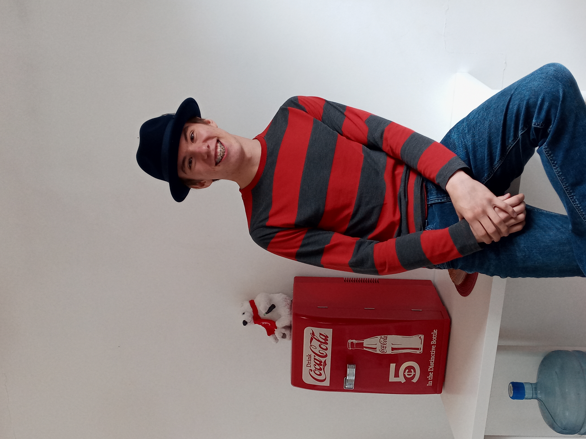

Thanks for downloading my site!
its not full of malware i promise
Hi! As you probably know, my name is Jonathen Adsit, and this is the website I'm currently building. Hosting a live website tends to be expensive, so hosting the source files on GitHub aught to do for now.
My only real plan for the site right now is to have a filled About Me page, where I'll only briefly mention my skills and education, and write extensively about jazz standards, fine hats, and why lasagna is the best food in this universe.
In the future perhaps I will find more content to populate these pages.
Until then, enjoy this charming photo of my new hat.

This is my navy blue bowler hat.
It's got a sky-blue ribbon around the base and a small gray feather on the left side. It's quite nice :)